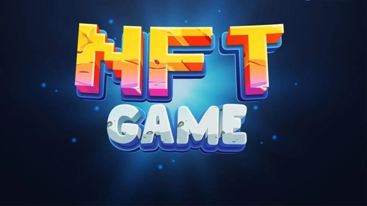
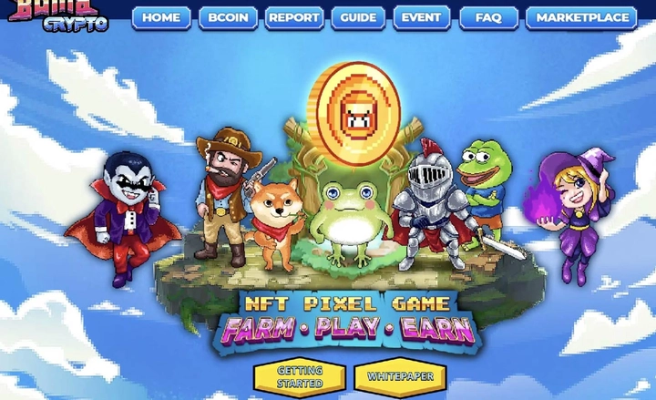
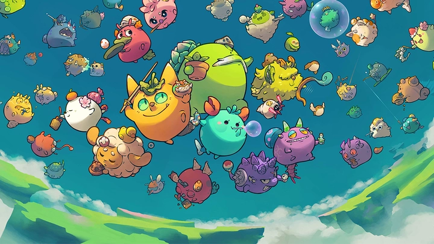
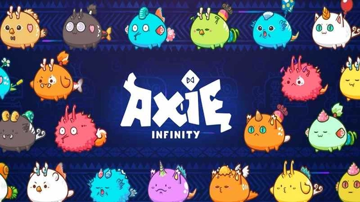
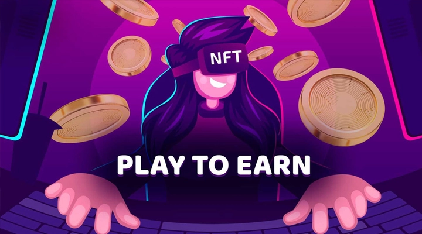

Game NFT: Hướng dẫn toàn tập cho người chơi và nhà đầu tư
Trong những năm gần đây, Game NFT (Non-Fungible Token) đã trở thành một hiện tượng toàn cầu, kết hợp giữa giải trí và ứng dụng công nghệ blockchain tiên tiến. Nhờ blockchain, mỗi vật phẩm trong game như nhân vật, vũ khí hay đất ảo trong metaverse đều trở nên minh bạch, độc nhất và có thể giao dịch an toàn. Điều này giúp người chơi không chỉ trải nghiệm trò chơi mà còn biến thời gian giải trí thành cơ hội đầu tư thực thụ.
Game NFT nhờ đó thay đổi cách chúng ta nhìn nhận giá trị số, kết nối người chơi, nhà sáng tạo và nhà đầu tư trong một hệ sinh thái minh bạch, bền vững và sáng tạo. Hôm nay hãy cùng TrithucWorld tìm hiểu tất tần tâh về game NFT trong thời đại nhé!
1. Game NFT là gì?
Game NFT (Non-Fungible Token) là một loại trò chơi điện tử tích hợp công nghệ blockchain, nơi mỗi vật phẩm số được mã hóa thành một token duy nhất, không thể thay thế, hay còn gọi là NFT. Điều này đồng nghĩa rằng mỗi nhân vật, skin, vũ khí, đất ảo hoặc vật phẩm đặc biệt trong game đều có giá trị và quyền sở hữu riêng biệt, được ghi nhận minh bạch trên blockchain.
Khác với các trò chơi truyền thống, nơi mọi tài sản số luôn thuộc quyền kiểm soát của nhà phát triển và người chơi chỉ có quyền sử dụng tạm thời, Game NFT trao quyền sở hữu thực sự cho người chơi. Họ có thể mua, bán, trao đổi, hoặc thậm chí cho thuê các NFT của mình trên các thị trường blockchain toàn cầu, biến thời gian chơi game thành một cơ hội đầu tư tiềm năng.
Ngày nay, nhiều người xem Game NFT không chỉ là hình thức giải trí mà còn là nghề chính thống, mang lại thu nhập thực tế.

Ngoài ra, tính duy nhất của mỗi NFT tạo ra cảm giác hiếm có và giá trị sưu tầm, khiến người chơi không chỉ tập trung vào trải nghiệm giải trí mà còn quan tâm đến chiến lược phát triển, sở hữu và giao dịch tài sản số. Mỗi hành động trong game, từ nâng cấp nhân vật, tạo skin mới đến tham gia sự kiện đặc biệt, đều có thể tác động đến giá trị NFT và quyền sở hữu của người chơi.
Nhờ sự kết hợp giữa blockchain và NFT, Game NFT không chỉ thay đổi cách chúng ta tương tác với trò chơi mà còn mở ra một hệ sinh thái mới, nơi người chơi, nhà phát triển và nhà đầu tư có thể cùng nhau khai thác giá trị, xây dựng cộng đồng minh bạch và phát triển nền kinh tế số xung quanh các trò chơi điện tử.
2. Cơ chế hoạt động của Game NFT
Các Game NFT vận hành dựa trên một cơ chế tương đối phức tạp nhưng minh bạch, kết hợp giữa mã hóa vật phẩm và hệ thống tự động hóa. Mỗi vật phẩm trong game — từ nhân vật, vũ khí đến đất ảo — đều được tạo thành một NFT duy nhất, ghi nhận quyền sở hữu và lịch sử giao dịch. Khi người chơi sử dụng, trao đổi, bán hoặc nâng cấp vật phẩm, hệ thống tự động xử lý mọi thao tác thông qua các hợp đồng thông minh, đảm bảo rằng mọi giao dịch đều được thực hiện chính xác, không thể gian lận và lưu lại lịch sử minh bạch.
Để hiểu rõ cơ chế hoạt động của vật phẩm trong Game NFT, có thể so sánh với các game truyền thống “cày level” như Võ Lâm Truyền Kỳ, Phong Thần, Mu…
Trong các game truyền thống, vật phẩm được tạo ra và lưu trữ trên máy chủ của nhà phát hành, dẫn đến một số hạn chế:
-
Nhà phát hành có thể tạo ra vật phẩm mạnh vượt trội để bán kiếm lời, gây mất cân bằng game.
-
Người chơi có thể lợi dụng lỗ hổng để tạo ra vật phẩm lỗi hoặc gian lận.
-
Nhà phát hành có quyền thu hồi hoặc xoá vật phẩm của người chơi bất cứ lúc nào.
-
Hacker nếu chiếm quyền điều khiển hệ thống có thể hack vật phẩm hoặc tiền ảo trong game.
Ngược lại, trong Game NFT, tất cả vật phẩm NFT và dòng code liên quan đến vật phẩm đều được quản lý thông qua hợp đồng thông minh (Smart Contract) trên blockchain. Điều này mang lại sự minh bạch tuyệt đối: thông tin về vật phẩm, lịch sử giao dịch và quyền sở hữu không thể thay đổi hoặc thao túng. Kết quả là, game trở nên cân bằng hơn, mọi người chơi đều có cơ hội tạo ra vật phẩm dựa trên “nhân phẩm” và thời gian cày cuốc của mình, thay vì bị chi phối bởi quyền lực hoặc thao túng từ bên ngoài.

Cơ chế này tạo ra sự khác biệt rõ rệt so với các trò chơi truyền thống, nơi tài sản luôn phụ thuộc vào máy chủ của nhà phát triển. Người chơi trong Game NFT có thể kiểm soát tài sản số của mình hoàn toàn, tự do giao dịch với người khác hoặc giữ làm sưu tầm, đồng thời các giá trị này có thể thay đổi dựa trên độ hiếm, hiệu quả sử dụng và nhu cầu thị trường. Chính tính minh bạch và quyền sở hữu thực sự này đã tạo nên một hệ sinh thái vừa giải trí vừa kinh doanh trong cùng một trò chơi.
Để hiểu hơn về Bitcoin và Blockchain, bạn có thể hiểu tại bài viết này: Giải thích dễ hiểu về Bitcoin
3. Các loại vật phẩm NFT trong game
Trong Game NFT, vật phẩm số không chỉ mang tính thẩm mỹ mà còn đóng vai trò chiến lược trong trải nghiệm chơi game. Các loại vật phẩm phổ biến bao gồm:
-
Skin và trang phục: Giúp người chơi thể hiện phong cách cá nhân, tạo dấu ấn riêng trong cộng đồng game. Một số skin hiếm còn có giá trị sưu tầm cao và có thể giao dịch với giá đáng kể.
-
Nhân vật và thú cưng (pet): Tăng sức mạnh, kỹ năng hoặc khả năng chiến đấu trong game. Mỗi NFT nhân vật có chỉ số riêng, có thể nâng cấp hoặc kết hợp để tạo ra phiên bản mạnh hơn.
-
Vũ khí và công cụ: Nâng cao hiệu quả chơi, từ tốc độ chiến đấu đến năng lực thu thập tài nguyên. Các NFT này thường được đánh giá dựa trên tính năng, độ hiếm và sự độc đáo.
-
Đất ảo và tài sản trong metaverse: Người chơi có thể sở hữu, xây dựng, trang trí và giao dịch các không gian ảo, từ căn nhà, tòa nhà đến khu vực thương mại. Những NFT này tạo ra cơ hội phát triển cộng đồng và mở rộng không gian sáng tạo.
Mỗi loại vật phẩm đều có giá trị riêng, ảnh hưởng đến chiến lược chơi và tiềm năng đầu tư của người chơi. Việc sở hữu những NFT hiếm hoặc đặc biệt mang lại lợi ích không chỉ trong game mà còn trong thị trường giao dịch ngoài đời thực.
4. Các mô hình Game NFT phổ biến
Các Game NFT hiện nay được phát triển theo nhiều mô hình khác nhau, phù hợp với nhu cầu giải trí, đầu tư và tương tác xã hội:
-
Play-to-Earn (P2E): Người chơi kiếm tiền trực tiếp từ hoạt động trong game, thông qua việc hoàn thành nhiệm vụ, chiến đấu hoặc giao dịch vật phẩm NFT. Đây là mô hình nổi bật thu hút cả game thủ và nhà đầu tư.
-
Move-to-Earn: Kết hợp các hoạt động ngoài đời thực với NFT, ví dụ như đi bộ, chạy bộ hoặc tham gia thử thách sức khỏe, giúp người chơi vừa rèn luyện thể chất vừa kiếm được vật phẩm số.
-
Collectible Games: Tập trung vào việc sưu tầm và trao đổi các NFT hiếm, tạo ra cộng đồng người chơi đam mê sưu tầm và giao dịch, nơi giá trị vật phẩm phụ thuộc vào độ độc đáo và nhu cầu thị trường.
-
Metaverse Games: Xây dựng không gian ảo đa chiều, kết hợp NFT để người chơi sở hữu đất ảo, tài sản số và tham gia trải nghiệm xã hội, thương mại hoặc sáng tạo nội dung trong thế giới số.

Những mô hình này không chỉ mở rộng cách chơi game mà còn tạo ra cơ hội kết hợp giữa giải trí, kinh doanh và phát triển cộng đồng, đưa Game NFT trở thành một hiện tượng toàn cầu với tiềm năng lâu dài.
5. Lợi ích của Game NFT cho người chơi
Game NFT mang đến nhiều lợi ích vượt trội so với game truyền thống, không chỉ là hình thức giải trí mà còn là cơ hội kinh tế thực sự:
-
Quyền sở hữu thực sự tài sản số: Người chơi thực sự nắm quyền sở hữu nhân vật, vũ khí, skin hay đất ảo dưới dạng NFT, khác hoàn toàn với game truyền thống, nơi tài sản luôn thuộc về nhà phát hành.
-
Tận dụng thời gian chơi để kiếm thu nhập: Những game Play-to-Earn (P2E) cho phép người chơi kiếm token hoặc NFT có giá trị thực tế, biến thời gian giải trí thành cơ hội đầu tư sinh lời.
-
Khả năng giao dịch và trao đổi toàn cầu: Vật phẩm NFT có thể được mua, bán hoặc trao đổi trên các nền tảng giao dịch mở, tạo cơ hội kết nối với cộng đồng người chơi toàn cầu.
-
Liên kết với metaverse và nền tảng số khác: Game NFT thường tích hợp với các dự án metaverse, DeFi, hoặc các ứng dụng blockchain khác, giúp người chơi mở rộng trải nghiệm, tương tác và gia tăng giá trị tài sản số.
Nhờ những lợi ích này, Game NFT không chỉ thay đổi cách chúng ta chơi game mà còn mở ra những cơ hội mới về kinh tế, xã hội và sáng tạo trong thế giới số.
6. Thách thức và rủi ro khi tham gia Game NFT
Bên cạnh những lợi ích, Game NFT cũng tồn tại nhiều rủi ro mà người chơi cần lưu ý:
-
Biến động giá NFT: Giá trị của NFT có thể tăng hoặc giảm rất nhanh, phụ thuộc vào thị trường, nhu cầu người chơi và xu hướng đầu tư. Một vật phẩm hôm nay có thể trở nên vô giá trị vào ngày mai.
-
Nguy cơ lừa đảo và dự án không minh bạch: Một số dự án game NFT thiếu kiểm soát, smart contract có lỗi hoặc không được audit kỹ, khiến người chơi dễ bị mất tài sản.
-
Chi phí giao dịch cao: Đặc biệt trên các blockchain sử dụng cơ chế Proof-of-Work, phí giao dịch (gas fee) có thể rất cao, làm giảm lợi nhuận từ việc chơi và giao dịch NFT.
-
Vấn đề pháp lý chưa đồng bộ: Quyền sở hữu NFT và các quy định liên quan đến tiền kỹ thuật số, tài sản ảo vẫn chưa được chuẩn hóa ở nhiều quốc gia, dẫn đến rủi ro về pháp lý và bảo vệ quyền lợi người chơi.
Hiểu rõ các rủi ro này giúp người chơi chuẩn bị kỹ càng, quản lý tài chính và lựa chọn dự án game NFT uy tín, giảm thiểu nguy cơ mất mát.
7. Game NFT và nền kinh tế số
Game NFT đang thúc đẩy sự hình thành một nền kinh tế số mới, nơi ranh giới giữa chơi game, đầu tư và sáng tạo trở nên linh hoạt:
-
Người chơi vừa là người tiêu dùng, vừa là nhà đầu tư, vì mọi hành động trong game đều có thể sinh lợi hoặc tạo ra tài sản có giá trị.
-
Việc sở hữu và giao dịch NFT trong game tạo ra dòng tiền mới, kết nối với các dự án DeFi, sàn giao dịch NFT và nền tảng metaverse, mở ra cơ hội kinh tế toàn cầu.
-
Game NFT cũng khuyến khích người chơi trở thành nhà sáng tạo, từ việc thiết kế nhân vật, skin, vũ khí cho đến xây dựng thế giới ảo, mở ra một thị trường sáng tạo đầy tiềm năng.
-
Mô hình này đang định hình lại cách con người tương tác với tài sản số, nơi giá trị không chỉ nằm trong vật phẩm vật lý hay tiền mặt, mà còn trong các trải nghiệm số, kỹ năng và sự tham gia tích cực trong cộng đồng.

Nhờ Game NFT, nền kinh tế số trở nên minh bạch, mở rộng và kết nối hơn, biến thế giới ảo thành một môi trường đầu tư, sáng tạo và giải trí thực thụ.
8. Các nền tảng và sàn giao dịch Game NFT
Các Game NFT hoạt động hiệu quả nhờ sự hỗ trợ từ những nền tảng và sàn giao dịch NFT uy tín, giúp người chơi có thể mua bán, trao đổi và quản lý vật phẩm một cách an toàn, minh bạch. Những nền tảng quốc tế phổ biến bao gồm:
-
OpenSea: Nền tảng NFT lớn nhất thế giới, cho phép người chơi trưng bày, giao dịch và đấu giá NFT từ các game và dự án khác nhau.
-
Rarible: Tạo và giao dịch NFT dễ dàng, hỗ trợ người dùng tham gia các dự án game sáng tạo.
-
Binance NFT: Liên kết trực tiếp với hệ sinh thái Binance, mang đến thanh khoản cao và an toàn cho giao dịch NFT.
-
Immutable X: Nền tảng Layer-2 trên Ethereum, tập trung vào game NFT với phí gas thấp và tốc độ giao dịch nhanh.
Tại Việt Nam, Game NFT đang phát triển mạnh, với một số dự án đáng chú ý:
-
Sky Mavis – Axie Infinity Việt Nam: Mặc dù là dự án quốc tế, Axie Infinity có cộng đồng người Việt rất đông đảo và phổ biến hình thức Play-to-Earn.
-
Monkey NFT: Game NFT với cơ chế P2E kết hợp sưu tầm, chiến đấu nhân vật.
-
MOBOX Việt Nam: Kết hợp NFT, DeFi và game, cho phép người chơi khai thác token và NFT qua các nhiệm vụ trong game.
-
HeroVerse: Game NFT chiến thuật, nơi người chơi thu thập và nâng cấp nhân vật NFT để tham gia các trận đấu PvP.
Nhờ các nền tảng và game nổi bật, người chơi tại Việt Nam có thể tham gia thị trường NFT một cách dễ dàng, kết nối với cộng đồng quốc tế và tận dụng cơ hội kiếm thu nhập từ game.
9. Tương lai của Game NFT
Tương lai của Game NFT hứa hẹn sẽ mang đến những trải nghiệm phong phú, đa chiều và sáng tạo hơn, khi công nghệ tiếp tục phát triển:
-
Tích hợp AI: Trí tuệ nhân tạo giúp cá nhân hóa trải nghiệm, tự động tạo nhiệm vụ hoặc vật phẩm mới theo hành vi của người chơi.
-
VR/AR: Công nghệ thực tế ảo và tăng cường mở ra không gian chơi game sống động, nơi người chơi có thể tương tác trực tiếp với NFT trong môi trường 3D.
-
Mở rộng sang các lĩnh vực khác: Game NFT sẽ kết hợp với thời trang số, âm nhạc, bất động sản ảo, giáo dục và nhiều lĩnh vực sáng tạo khác, tạo ra thị trường NFT đa ngành.
-
Thị trường toàn cầu kết nối người chơi: NFT sẽ giúp người chơi từ nhiều quốc gia tham gia cùng nhau, trao đổi vật phẩm, tài nguyên, hoặc hợp tác sáng tạo trong các dự án metaverse.

Những xu hướng này không chỉ nâng cao trải nghiệm chơi game mà còn biến NFT trở thành một phần không thể thiếu trong nền kinh tế số và sáng tạo toàn cầu.
10. Chiến lược tham gia Game NFT an toàn và hiệu quả
Để tham gia Game NFT một cách thông minh, người chơi cần xây dựng chiến lược rõ ràng:
-
Chọn game uy tín, nền tảng minh bạch: Tránh các dự án thiếu thông tin, chưa audit smart contract, hoặc không có cộng đồng và nhà phát triển đáng tin cậy.
-
Quản lý rủi ro và đầu tư hợp lý: Xác định số vốn hợp lý để chơi và đầu tư, không dồn toàn bộ tài sản vào một game hoặc NFT duy nhất.
-
Bảo mật ví và tài khoản: Sử dụng ví an toàn, bảo vệ private key và bật xác thực đa yếu tố để tránh rủi ro bị hack.
-
Kết hợp giải trí và kiếm thu nhập: Game NFT nên vừa là nguồn thu nhập vừa là trải nghiệm giải trí, giúp cân bằng giữa lợi nhuận và niềm vui khi chơi.
-
Theo dõi thị trường và học hỏi cộng đồng: Tham gia forum, nhóm cộng đồng, cập nhật dự án mới để nắm bắt cơ hội, đồng thời tránh bị lừa đảo hoặc mất giá trị NFT.
Với chiến lược đúng đắn, người chơi không chỉ bảo vệ tài sản mà còn tận dụng tối đa tiềm năng của Game NFT trong kinh tế số và thế giới giải trí kỹ thuật số.